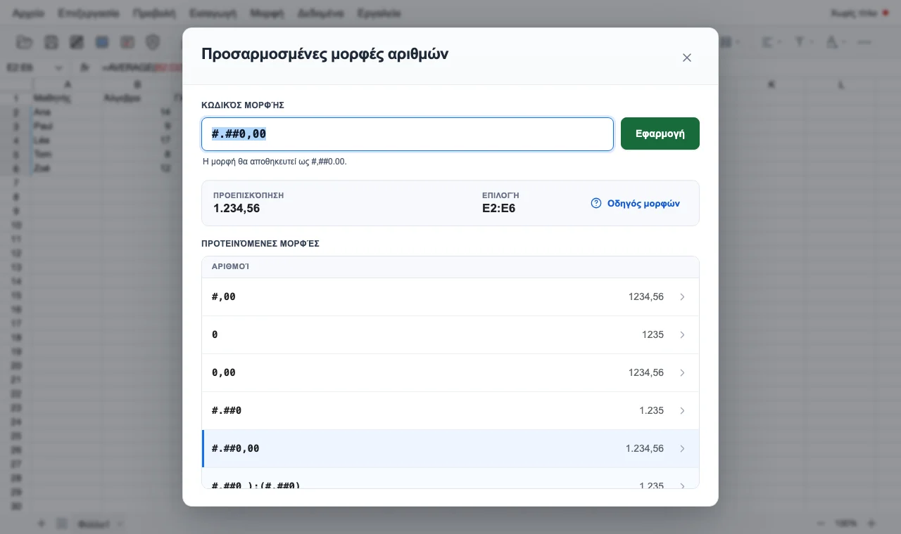

Μορφές αριθμών
Μια μορφή αλλάζει την εμφάνιση ενός αριθμού, όχι την τιμή του: οι υπολογισμοί κρατούν όλα τα δεκαδικά.
Επιλογή μορφής
Μορφή › Αριθμός, ή η λίστα Αυτόματο της γραμμής κουμπιών.
| Μορφή | Παράδειγμα |
|---|---|
| Αυτόματο | 1200,09 |
| Απλό κείμενο | 1200,09, στοιχισμένο αριστερά· η εισαγωγή μένει κείμενο |
| Αριθμός | 1200,09 |
| Ποσοστό | 120009,00%· το 0,25 γίνεται 25,00% |
| Επιστημονική | 1,20E+03 |
| Λογιστική | (1.200,09) € |
| Νόμισμα | 1.200,09 € |
| Ημερομηνία, Ώρα, Ημερομηνία και ώρα | για ημερομηνίες: 29/11/2017, 3:00 PM, 15:00… |
Το σύμβολο νομίσματος είναι της γλώσσας του περιβάλλοντος.
| Κουμπί | Αποτέλεσμα |
|---|---|
| ποσοστό | |
| ένα δεκαδικό λιγότερο | |
| ένα δεκαδικό περισσότερο |
Τα κουμπιά αυτά ισχύουν και για τους αριθμούς μιας λίστας. Για στρογγυλοποίηση της ίδιας της τιμής, χρησιμοποιήστε ROUND.
Προσαρμοσμένη μορφή
Μορφή › Αριθμός › Προσαρμοσμένη μορφή αριθμού…: επιλέξτε μια προτεινόμενη μορφή, ή γράψτε κώδικα. Η προεπισκόπηση δείχνει το αποτέλεσμα· το Οδηγός μορφών θυμίζει τα σύμβολα· το Εφαρμογή τη δίνει στην επιλογή.

| Σύμβολο | Ρόλος | Κώδικας | Το 1234,5 εμφανίζεται |
|---|---|---|---|
0 | ένα ψηφίο, και το μηδέν | 0,00 | 1234,50 |
# | ένα ψηφίο αν χρειάζεται | #,## | 1234,5 |
. | ομαδοποιεί τις χιλιάδες | #.##0 | 1.235 |
% | ποσοστό | 0% | 123450% |
"κείμενο" | ένα κείμενο, μια μονάδα | 0,0 "m" | 1234,5 m |
E+00 | επιστημονική γραφή | 0,00E+00 | 1,23E+03 |
; | μορφές για θετικούς, αρνητικούς, μηδέν, κείμενα | 0;-0;"μηδέν" | 1235 |
[Red] | χρώμα | 0;[Red]-0 | οι αρνητικοί με κόκκινο |
Ο κώδικας γράφεται με τα διαχωριστικά της γλώσσας· το παράθυρο δείχνει τη μορφή στην οποία αποθηκεύεται (#,##0.00), ίδια με του Excel.
Ημερομηνίες και ώρες
| Κώδικας | 29 Αυγούστου 2026, 14:30 |
|---|---|
dd/MM/yyyy | 29/08/2026 |
d mmm yyyy | 29 Aug 2026 |
dddd d mmmm yyyy | Saturday 29 August 2026 |
hh:mm | 14:30 |
dd/MM/yyyy hh:mm | 29/08/2026 14:30 |
Τα ονόματα μηνών και ημερών εμφανίζονται στα αγγλικά.
Μονάδες
Στο Μονάδες, μορφές όπως 0,00 "V", 0,00 "Ω", 0,00 "mm": το κελί μένει αριθμός, με τον οποίο γίνονται υπολογισμοί.